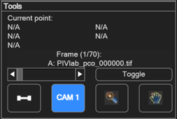
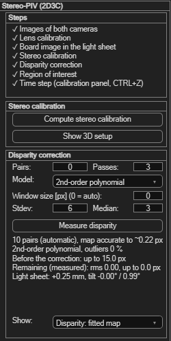

Stereo-PIV (2D3C)
Two cameras that look at the light sheet from different directions give all three velocity components: u and v in the sheet and w through it. Most of the work is the same as in 2D PIV; new are the camera switch and the Stereo-PIV panel.
Overview
- Import the images of both cameras.
- Lens calibration and board image for each camera.
- Stereo calibration: positions of the cameras, common view of both.
- Disparity correction: fine alignment of both cameras on the particle images.
- ANALYZE: 2D PIV of each camera, then u, v and w.
- Use w in the rest of PIVlab.
After the stereo calibration both cameras are mapped onto one common grid in the light sheet, so a point of the sheet lies at the same pixel in both images. The two 2D results then differ only because the cameras see the out-of-plane motion from different angles; w follows from this difference.
Camera set-up
| Arrangement | Notes |
|---|---|
| Same side of the sheet (side by side, above each other, diagonal) | The usual set-up; any direction between the cameras works. |
| Opposite sides of the sheet | The camera behind the board sees it from its back: use a transparent board (or one printed mirrored on the back). PIVlab detects the mirrored board automatically. |
What counts is the angle between the two lines of sight: 30° to 90° is good; a small angle makes w noisy. Two cameras that look at each other along one line can not measure w.
Coordinate system
The board in the light sheet defines the axes, as seen from camera 1:
| Axis | Direction | Velocity component |
|---|---|---|
| X | in the board plane, to the right in the image | u |
| Y | in the board plane, down in the image | v |
| Z | normal to the board, away from camera 1 | w |
X and Y are the x and y of the PIVlab image, the displays and the exports. A positive w points away from camera 1 (both cameras on the same side of the sheet: away from the cameras). w has the units of u and v. The axes follow the board, not the light sheet: if the sheet is slightly tilted, the result is still aligned with the board, i.e. with your model or test section.
Two cameras in one session
All panels work on the active camera. Switch with the CAM 1 / CAM 2 button in the Tools panel or with Ctrl+Shift+1 / 2. The image shows which camera is active (camera 1 blue, camera 2 orange).

| Kept | What |
|---|---|
| Per camera | images, lens calibration, board image, background images, masks, the 2D result |
| Shared | all settings, region of interest, spatial calibration, results (u, v, w) |
1. Import
- Input data panel: Import stereo images (Ctrl+Shift+O). In the import dialog add the images with Add to camera 1 and Add to camera 2.
- Both cameras need the same number of images and the same sequencing style.
- Recordings made with stereo acquisition open in stereo mode directly.
Before the stereo calibration, ANALYZE runs a normal 2D analysis of the camera that is shown, to check the particle images. These check results are removed by the stereo calibration.
2. Lens calibration and board image
As in Camera calibration, once for each camera (the board definition is shared):
- Lens calibration: Estimate cam parameters or Load parameters (tilted sensor model for Scheimpflug adapters). Stereo-PIV always undistorts; the checkbox Show undistorted image only changes the display.
- Board image in the light sheet: Load target image. Both images must show the board in the same position (ideally recorded at the same time), covering as much of the measurement area as possible.
3. Stereo calibration
Steps 3 and 4 are in the Stereo-PIV panel (Analysis → Stereo-PIV, Ctrl+Shift+W). Its checklist shows what is still missing.

Compute stereo calibration finds the board corners in both board images and computes the camera positions. Afterwards:
- Both cameras are shown on the common grid (check with Show rectified board: the corners lie at the same pixels in both cameras).
- The spatial calibration (px → mm) is filled in; only the time step is missing.
- The region of interest is the overlap of both views.
- Masks, background images and results of both cameras are removed (PIVlab asks first), and background subtraction is switched off. Draw masks after the calibration.
Show 3D setup draws cameras, board and light sheet, with a report of the viewing angles, the angle between the cameras, the scale, the overlap and the expected error of w relative to u and v.
4. Disparity correction
The board is never exactly in the light sheet, so a small shift between the cameras remains: the disparity. Measure disparity correlates frame A of camera 1 with frame A of camera 2, fits a smooth map and corrects both cameras with it. It also gives the position of the light sheet. ANALYZE measures it automatically if you have not.
Only image data inside the region of interest and outside the masks (of both cameras) is used, with the image pre-processing of the GUI. A minimum-intensity background of each camera is always removed for this (from at least 10 A images).
| Setting | Meaning |
|---|---|
| Pairs | Image pairs used. 0 (default) = automatic, until the map is accurate to about 0.5 px. |
| Passes | Measure again on the corrected images (default 3; stops when less than 0.1 px remains). |
| Model | 2nd-order polynomial (default), plane or projective. |
| Window size | First interrogation area in px, 0 = automatic (large windows are more robust here). |
| Stdev / Median | Validation of the disparity vectors (defaults 6 and 3). |
The report shows the pairs used and the accuracy of the map, the share of outliers, the disparity before the correction, what remains after it (without the noise of the measurement), and the position and tilt of the light sheet. If more than 1 px remains locally, look at Remaining disparity: a pattern points to the lens calibrations, the board images or a light sheet that is not flat. Masks drawn before may have to be adapted; PIVlab warns you.
Show lists the displays that have data. The colour maps have a colour bar from 0 px (colormap and position as in the plot settings).
| Display | Shows |
|---|---|
| Camera image | The corrected image of the active camera. |
| Disparity: measured vectors | Measured shifts after all passes; green = used by the fit, red = rejected. |
| Disparity: fitted map | The correction that is applied. |
| Remaining disparity | Measured minus fitted, as measured (with noise): should be small and random. Colours end at the 95th percentile. |
| Reconstruction residual | After ANALYZE, for the image pair shown: how well both 2D results fit one 3D velocity. High values: a wrong vector in one camera, or the cameras do not see the same place. |
5. Analysis and validation
Pre-processing, masks (per camera), PIV settings and ANALYZE! work as in 2D. ANALYZE analyses both cameras with the same settings and computes u, v and w.
- Vector validation filters the 2D results of both cameras; u, v and w are then computed again.
- Velocity limits work on the 3D result (the magnitude limit on sqrt(u² + v² + w²)). A vector outside them is removed in both cameras.
- u and v are shown as vectors. A session keeps both cameras, the calibrations, the disparity and the result.
6. w in the rest of PIVlab
| Where | In stereo mode |
|---|---|
| Derive parameters | Extra item w component; Magnitude is 3D. Smoothing includes w. |
| Temporal operations | Mean, sum, standard deviation, TKE (with 0.5·var(w)) and phase averages include w. Make them after the validation: ANALYZE and the validation remove mean frames. |
| Export | ASCII / Tecplot: columns
x y u v w type …. VTK: vectors with w, points in z = 0. MAT / workspace:
w_original, w_filtered, w_smoothed and a struct
stereo (reconstruction residual, light sheet position, pixel size). |
| Statistics | w next to u and v, histogram w velocity, Scatter plot u, v, w (3D). sub-pixels uses the 2D result of the active camera. |
| Poly-line / area | Extra item w component; magnitude is 3D, tangent and normal velocity stay in the sheet plane. |
| Click on a vector | Shows w below u and v. |
Stereo-PIV also runs from a MATLAB script with the same results: Command line: Stereo-PIV.